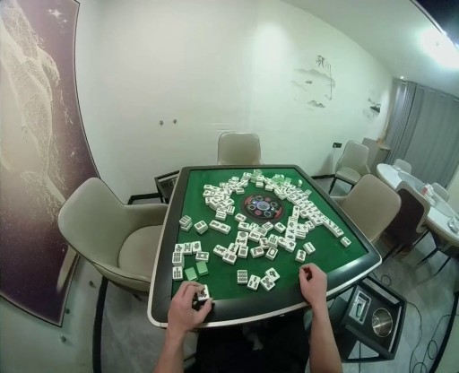
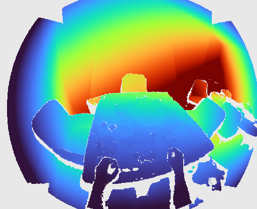
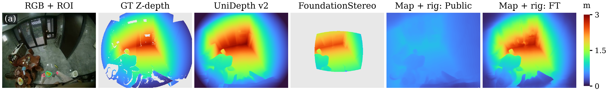
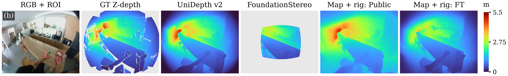
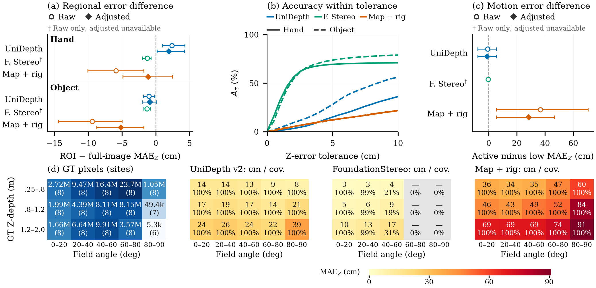

EgoDepth-BenchBenchmarking Metric Depth
for Egocentric Manipulation


 2 m Invalid
2 m Invalid
The benchmark
As a person reaches for an object, the hands, the object and the camera can all move at once. EgoDepth-Bench pairs six head-worn RGB views with metric depth on the same fisheye grid, so monocular, stereo and multi-view methods can be compared on the same interaction.
On eight held-out test sites, we measure both depth error and how much of the scene a method predicts. That distinction matters near hands and objects, where a method can be accurate on the pixels it covers and miss much of the interaction.
Project film
2 min 40 secDataset and ground truth
- Timestamps
- 941,233
- Physical sites
- 37
- Recordings
- 1,155
- Recorded time
- 8.72 h
Five participants wore the rig while folding clothes, tidying tables, cleaning and mopping. Six RGB cameras and five active-infrared stereo modules share a 30 Hz trigger. The benchmark holds out physical sites, with 24 for training, five for validation and eight for testing.

Checking metric scale
We fit sphere centers from the reconstructed depth and compare their distance with the ball-bar’s certified spacing of 499.9903 mm.
Across 1,220 accepted measurements, the median absolute spacing error is 1.27 mm and the 95th percentile is 6.66 mm.

Qualitative comparisons
Full figure
The pink contour marks the hand and the green contour marks the object. Follow them across predictions to see where each method recovers depth and where its support ends. Gray denotes invalid depth.





Quantitative results
We evaluate 6,574 test timestamps from eight held-out sites. Depth error is measured on valid predictions within the reference domain (0.25–2 m). Coverage reports the fraction of that domain predicted. Each site contributes equally to the final score.
FoundationStereo achieves 0.068 AbsRel at 35.4% coverage. With six views and rig poses, fine-tuning MapAnything reduces AbsRel from 0.708 to 0.091 at 100% reported coverage.
Public-checkpoint benchmark
The table groups 18 public models by input and scale convention. Hand and object results use 291 and 257 reference-supported annotated frames, respectively.
Scroll horizontally on narrow screens to see all metrics.
| Method | Views | Main test set · full image | Hands · annotated subset | Objects · annotated subset | |||||
|---|---|---|---|---|---|---|---|---|---|
| AbsRel ↓ | MAEZ ↓cm | δ1 ↑ | Coverage ↑% | MAEZ ↓cm | Coverage ↑% | MAEZ ↓cm | Coverage ↑% | ||
| Metric monocular: camera 2; model-supported calibration; no alignment | |||||||||
| UniDepth v2 | 1 | 0.201 | 15.44 | 0.706 | 100.0 | 15.05 | 100.0 | 11.52 | 100.0 |
| Depth Pro | 1 | 2.152 | 149.66 | 0.019 | 100.0 | 78.01 | 100.0 | 90.91 | 100.0 |
| Metric3D v2 | 1 | 0.452 | 37.37 | 0.296 | 100.0 | 17.95 | 100.0 | 20.66 | 100.0 |
| DA3 Metric-Large | 1 | 0.458 | 31.61 | 0.414 | 100.0 | 10.72 | 100.0 | 12.19 | 100.0 |
| ZoeDepth | 1 | 2.457 | 159.24 | 0.006 | 100.0 | 115.11 | 100.0 | 116.82 | 100.0 |
| UniK3D | 1 | 0.392 | 30.63 | 0.387 | 100.0 | 33.77 | 100.0 | 31.33 | 100.0 |
| DAC | 1 | 0.411 | 38.91 | 0.246 | 96.7 | 9.92 | 99.3 | 17.74 | 99.9 |
| UniDAC | 1 | 0.242 | 20.30 | 0.519 | 99.2 | 16.88 | 100.0 | 14.04 | 100.0 |
| Calibrated RGB stereo: cameras 2–3; rectified overlap; no alignment | |||||||||
| FoundationStereo | 2 | 0.068 | 7.35 | 0.951 | 35.4 | 2.15 | 72.8 | 2.52 | 81.0 |
| GeoStereo | 2 | 0.078 | 8.24 | 0.954 | 35.4 | 2.28 | 72.8 | 2.75 | 81.0 |
| Metric reconstruction from RGB: no supplied rig poses; no alignment | |||||||||
| MASt3R | 2 | 1.499 | 93.22 | 0.074 | 100.0 | 70.06 | 100.0 | 66.06 | 100.0 |
| CUT3R | 6 | 1.100 | 64.58 | 0.184 | 100.0 | 64.17 | 100.0 | 62.93 | 100.0 |
| Metric multi-view with calibration: synchronized RGB and per-camera rays; no alignment | |||||||||
| MapAnything | 6 | 3.168 | 200.76 | 0.031 | 100.0 | 198.23 | 100.0 | 179.28 | 100.0 |
| MapAnything + rig | 6 | 0.708 | 49.07 | 0.204 | 100.0 | 36.51 | 100.0 | 33.81 | 100.0 |
| Oracle-aligned multi-view: synchronized RGB; scale-only alignment | |||||||||
| VGGT | 6 | 0.428 | 30.59 | 0.365 | 100.0 | 21.90 | 100.0 | 16.83 | 100.0 |
| VGGT-Ω | 6 | 0.284 | 19.60 | 0.553 | 100.0 | 10.43 | 100.0 | 12.66 | 100.0 |
| Oracle-aligned monocular: camera 2; representation-specific alignment | |||||||||
| Depth Anything v2 | 1 | 0.247 | 20.55 | 0.533 | 100.0 | 6.57 | 100.0 | 11.51 | 100.0 |
| Marigold | 1 | 0.275 | 19.01 | 0.569 | 100.0 | 13.44 | 100.0 | 12.51 | 100.0 |
| MoGe | 1 | 0.323 | 21.13 | 0.497 | 100.0 | 14.13 | 100.0 | 12.77 | 100.0 |
Metric definitions and experimental conditions
Read error with coverage. AbsRel, MAEZ, and δ1 are computed on the intersection of valid reference and prediction support. Coverage is the predicted fraction of the valid reference domain in 0.25–2.0 m. δ1 uses the 1.25 threshold. Pixels pool within sites, then sites receive equal weight. Coverage is rounded as in the paper.
Input conventions. Monocular models receive camera 2; stereo receives cameras 2/3 rectified to an 800 × 640, 90° horizontal field of view. Six-view methods receive synchronized cameras. MapAnything uses its Apache checkpoint and per-camera calibrated rays; “+ rig” also supplies metric camera-to-rig poses. The two MapAnything rows are conditions of the same model, not two independent models.
Metric and oracle groups are different settings. Metric outputs are not aligned. Oracle alignment uses target-frame ground truth: a positive least-squares Z scale for VGGT, VGGT-Ω, and MoGe; affine inverse depth for Depth Anything v2; and affine Z for Marigold. A single full-target fit is reused for all regions. These oracle scores do not establish metric scale recovery.
Adaptation with matched inputs
Public, Scale-only, and Fine-tuned MapAnything share Apache initialization, six RGB views, calibrated rays, and metric rig poses. Test sites are held out from fine-tuning.
Scroll horizontally on narrow screens to compare all three conditions.
| Evaluation | Public | Scale-only | Fine-tuned |
|---|---|---|---|
| Full image | |||
| AbsRel ↓ | 0.708 | 0.601 | 0.091 |
| MAEZ (cm) ↓ | 49.07 | 43.05 | 7.03 |
| Coverage (%) ↑ | 100.0 | 100.0 | 100.0 |
| Annotated subset | |||
| Hand MAEZ (cm) ↓ | 36.51 | 30.55 | 3.82 |
| Object MAEZ (cm) ↓ | 33.81 | 29.05 | 5.21 |
| Object A5cm (%) ↑ | 11.91 | 12.02 | 59.96 |
| Object coverage (%) ↑ | 100.0 | 100.0 | 100.0 |
| Active-object A5cm (%) ↑ | 14.12 | 13.65 | 61.79 |
| Active-object coverage (%) ↑ | 100.0 | 100.0 | 100.0 |
| Oracle-aligned on common support | |||
| Aligned AbsRel ↓ | 0.327 | 0.327 | 0.072 |
| Aligned object MAEZ (cm) ↓ | 12.44 | 12.44 | 4.78 |
Metric definitions and experimental conditions
Training-set calibration is not test-frame alignment. Scale-only freezes the network and fits one positive multiplier on 1,024 unique training samples with frame-mean log-Z Huber loss. The multiplier stays fixed across test samples. Fine-tuned predictions are direct metric outputs and are not multiplied by this calibration.
A5cm includes missing predictions as failures. It is the percentage of eligible reference pixels predicted within 5 cm in optical-axis Z. Hand/object rows use accepted regions in the diagnostic subset; they do not describe fully annotated hands and objects on every test frame.
Aligned rows are separate diagnostics. Each frame and arm fits an independent positive scale on full-image common support shared by Public and Fine-tuned; that fit is reused for object scoring. The reported fine-tuning uses one validation-selected run (6,000 steps, batch 36, seed 20260912), not an average across training seeds.
Views and rig geometry
One fixed Apache MapAnything checkpoint, with calibrated rays for every input view. “6 + rig” additionally receives metric camera-to-rig poses; all conditions omit depth hints and optional multi-view confidence filtering.
Scroll horizontally on narrow screens to see the accuracy and cost columns.
| Views | Full image | Objects · annotated subset | Cost · RTX 4090 | |||
|---|---|---|---|---|---|---|
| AbsRel ↓ | MAEZ ↓cm | MAEZ ↓cm | A5cm ↑% | Forward time ↓ms | Peak memory ↓GB | |
| 1 | 2.800 | 176.70 | 173.19 | 0.01 | 58 | 7.7 |
| 2 | 3.392 | 211.34 | 188.00 | 0.03 | 88 | 8.2 |
| 6 | 3.168 | 200.76 | 179.28 | 0.01 | 233 | 10.1 |
| 6 + rig | 0.708 | 49.07 | 33.81 | 11.91 | 235 | 10.1 |
Metric definitions and experimental conditions
Coverage. Full-image coverage is at least 99.99% and object coverage is 100% for all four conditions. One view means camera 2; two views means cameras 2/3; six views means all six synchronized RGB cameras.
Cost. Median synchronized forward time and peak allocated GPU memory, batch one, BF16, on RTX 4090. Data loading is excluded. All measured calls are retained; no explicit warmup exclusion was applied.
Interpretation. More views alone do not give a clear accuracy gain in this experiment. Rig poses substantially improve metric scale; the distinction between that scale benefit and relative-depth accuracy is analyzed separately in the paper.
Interaction diagnostics Fig. 4

Citation
The manuscript and project film are available above. Dataset downloads, evaluation code and fine-tuned weights are being prepared for release.
@misc{gao2026egodepthbench,
title = {EgoDepth-Bench: Benchmarking Metric Depth for Egocentric Manipulation},
author = {Yuan Gao and Dongchen Wei and Xinyang Lin and Shuhua Cao and
Xueliang Guo and Zhuohan Li and Yihao Wang},
year = {2026},
note = {Manuscript}
}